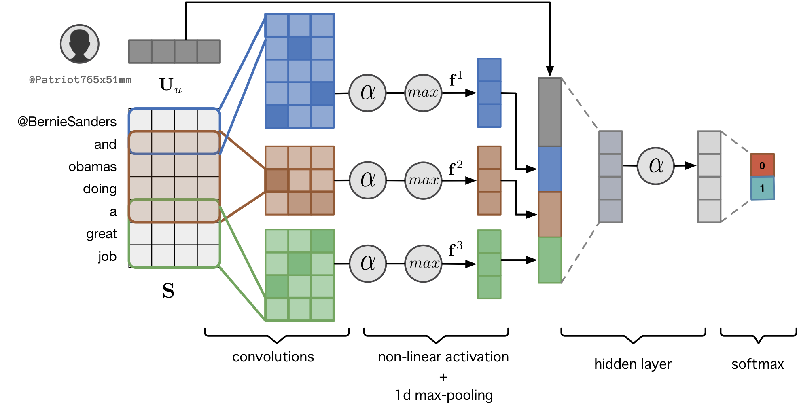
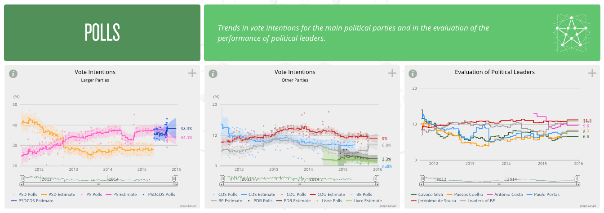

Ongoing Projects
Californians Talk HIV: Using Social Media to Get Steps Ahead
The goal of this project is to extract actionable intelligence from social media platforms to support timely, evidence-based decision making and help public health leaders and advocates stay one step ahead of California’s HIV epidemic.
Specific Aims
- Develop a comprehensive, continuously updated database of public HIV-related social media posts (e.g. Twitter, Reddit, Google, etc.) including platforms targeting at-risk group (e.g. sex forums), filtered to include California residents
- Develop automated, scalable social media content analysis tools to discover the HIV related health needs of Californians.
- Develop tools to infer the demographic characteristics of social media account holders to contextualize the HIV related needs of specific demographic groups in California

Increasing Citizen Participation in E-Rulemaking by Harnessing Social Media
This project aims to increase public participation in the regulatory by crowdsourcing and extracting actionable feedback regarding government regulations from public social media comments. The goal is to develop a process that can funnel millions of public comments into a clear feedback mechanism to regulators. This process can effectively increase rulemaking participation by passively including millions of citizens and providing unsolicited comments throughout the rulemaking process. As a case-study, we will consider the FDA’s recently expanded regulation of tobacco products.
Specific Aims
- Create a comprehensive, constantly updated corpus of public Electronic Nicotine Delivery Systems (ENDS) related comments from Twitter, Reddit and other social media platforms.
- Automatically identify and characterize social media comments relevant to ENDS’ regulations.
- Conduct a comparative analysis of relevant comments on regulations.gov with comments derived from our social media analysis to identify areas of overlap and unique insights arising from social media.
Past Projects
EXPRESS
Expression and Recognition of Irony in Multicultural Social Media
Joint research project with the University of Texas at Austin, on automatic analysis of sarcasm and irony in text, funded by FCT Portugal
We developed novel sarcasm detection methods, including a deep neural network that automatically learns and exploits representations for both the author and contents of a post to make contexualized inferences.


Press Coverage
| New Scientist | Digital Trends | Tech Crunch | Sky News | Daily Mail | Sapo |
| Tech Xplore | Improbable Research | Evening Standard | Euclid | Vocativ |
POPSTAR
Public Opinion and Sentiment Tracking, Analysis, and Research
Interdisciplinary R&D project on using conventional and social media to measure and track public opinion, funded by FCT Portugal
We built a political opinion mining for social media to measure the popularity and attitudes about Portuguese political entities over time. The indicators produced by the system were aligned with traditional polls and published in quasi-realtime (i.e. updated daily) in a publicly available dashboard, which has been used by political scientists to conduct new studies on public opinion. See the project’s (archived) webpage for more details and the respective scoop.it for some of the related press coverage.



REACTION
Retrieval, Extraction and Aggregation Computing Technology for Integrating and Organizing News
Interdisciplinary R&D project to create tools and methodologies to support advanced computational newsrooms, funded by the CoLab, UT Austin | Portugal
We developed novel data-driven tools for journalists to uncover new stories, gain new insights into relevant events and gauge public reactions in real-time. See the project’s (archived) webpage for more details and the respective scoop.it for some of the related press coverage.